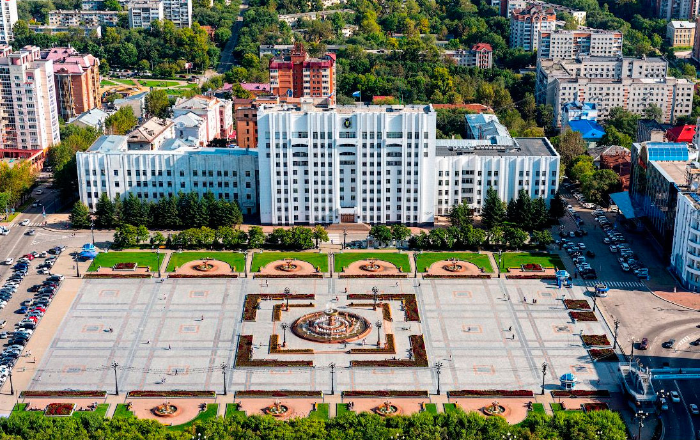

Хаба́ровск — город (с 1880 года) в России, административный центр Хабаровского края[4]. Один из крупнейших политических, образовательных и культурных центров Дальнего Востока России. Крупнейший город Дальнего Востока с населением — 616 372[2] чел. (2020). Площадь города — 386 км². Расположен в центре пересечения международных железнодорожных и воздушных транспортных путей на правом берегу Амурской протоки и реки Амур на Среднеамурской низменности, вблизи границы с Китаем (теплоходом от речного вокзала до ближайшего китайского населённого пункта Фуюань около 65 км). Расстояние до Москвы по прямой (по воздуху) — приблизительно составляет 6100 км, по железной дороге — 8533 км. В городе есть два аэропорта, железнодорожный вокзал, четыре железнодорожные станции, узел автодорог, речной порт.
Санкт-Петербу́рг (с 18 [31] августа 1914 года до 26 января 1924[8] года — Петрогра́д, с 26 января 1924 года до 6 сентября 1991 года[3] — Ленингра́д, в разговорной речи — Пи́тер, сокр. — СПб) — второй по численности населения город России[9]. Город федерального значения. Административный центр Северо-Западного федерального округа и Ленинградской области. Основан 16 (27) мая 1703 года царём Петром I. В 1712—1918 годах — столица Российского государства[10]. Назван в честь Святого Петра, небесного покровителя царя-основателя, но со временем стал всё больше ассоциироваться с именем самого Петра I. Город исторически и культурно связан с рождением Российской империи и вхождением России в современную историю в роли европейской великой державы[11].Расположен на северо-западе страны, на побережье Финского залива и в устье реки Невы. Граничит с Ленинградской областью, также имеет морские границы с Финляндией и Эстонией.
| 28 достопримечательностей Хабаровска, которые стоит посмотрет / | |
| 936 из 1100 городов (85 %) составляют города с численностью населения до 100 тысяч жителей. В 15 городах РФ живёт более 1 млн человек, в 22 городах — от 0,5 до 1,0 млн человек | |
|  | |
| Я погнал | |